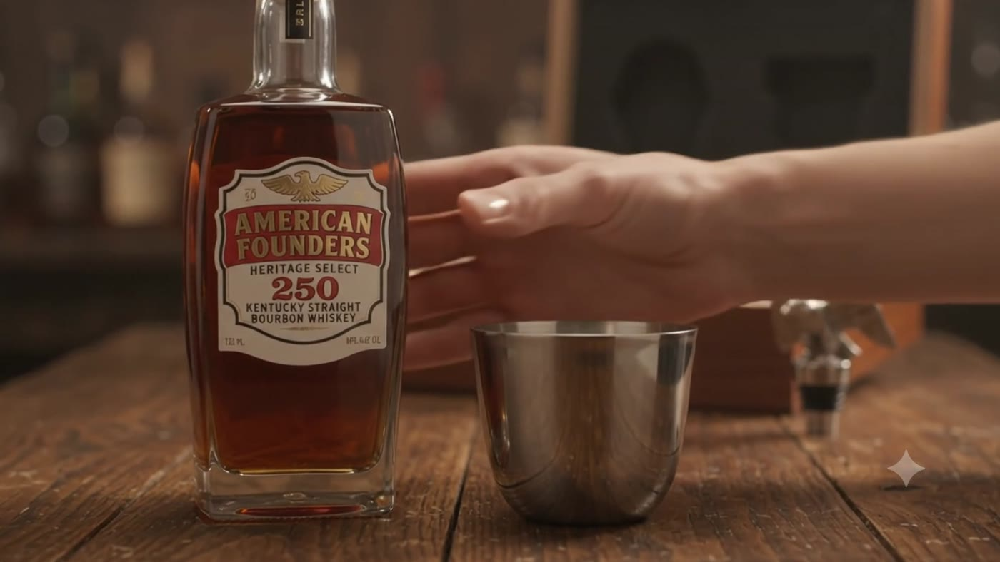

Two hundred
and fifty years.
The Declaration was set in Caslon and pulled on a hand press in a single night in July. Two hundred and fifty years on, we filled two hundred and fifty boxes — one for each year — and stopped.
Why 250, and not a round thousand.
A single barrel of seven-year bourbon does not yield very much. After the angels take their share, what is left is a few hundred bottles — not a production run, a quantity. We could have stretched it by vatting in other barrels. We would rather it ran out.
So the edition is the anniversary: two hundred and fifty sets, numbered one through two hundred and fifty, each carrying a year of the republic.

Nothing in the box is decoration.
- —
The eagle
The bald eagle was fixed to the Great Seal in 1782, after six years of argument and three failed committees. It holds an olive branch in one talon and thirteen arrows in the other, and it faces the olive branch. That was the point of it.
- —
The Jefferson cup
Jefferson had a set of straight-sided silver beakers made to his own drawing, sized to the hand and flat-bottomed so they would not tip on a writing table. Ours are pewter, in his proportions.
- —
The typeface
Every word on this site is set in Caslon, the face John Dunlap used for the broadside copies of the Declaration on the night of the 4th of July, 1776.
- —
The whiskey
Whiskey was currency on the frontier before it was a drink with a label, and it was taxed for the first time in 1791 — which went about as well as you would expect. Bourbon is the part of the story that stayed.